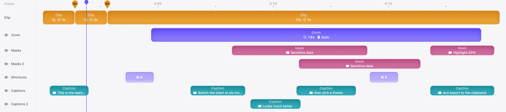
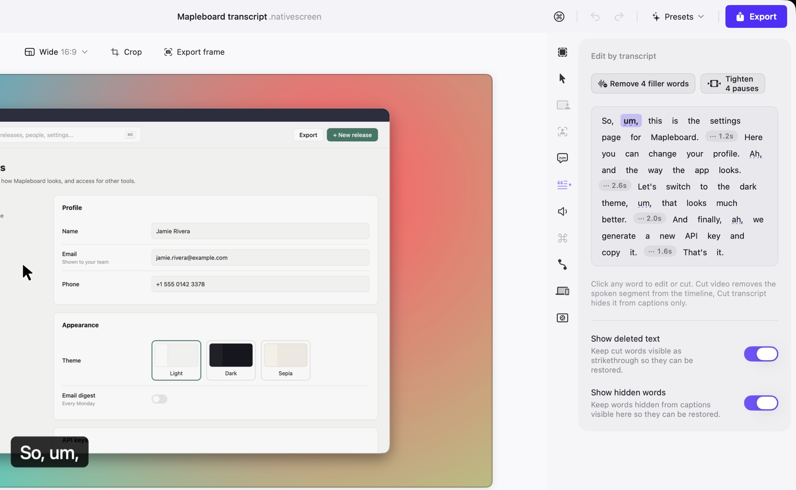
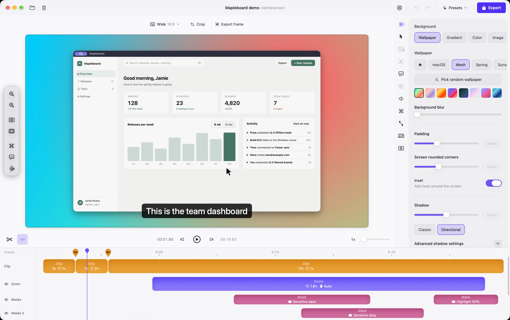
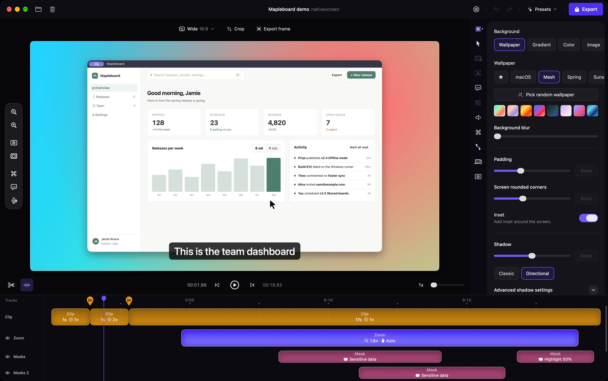
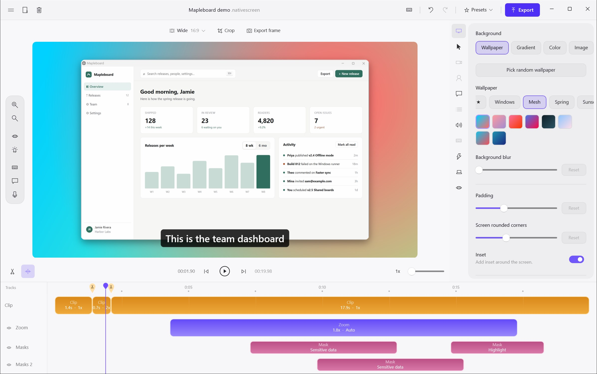

Zooms that follow you
Clicks and typing become zooms on their own. Move them, change the depth, or switch to a loupe that magnifies one spot.
Screen recorder for macOS and Windows · Free and open source
Native Screen turns a plain screen recording into a polished demo: zooms that follow your clicks, a cursor that glides, captions, backgrounds, and a real multi-track timeline when you want control. Everything runs on your computer.
Most recorders give you one row for zooms and call it editing. Native Screen gives each kind of item its own tracks, and lets you add more: two blurs that overlap, caption lines stacked for two speakers, shortcuts on their own lane.

Clicks and typing become zooms on their own. Move them, change the depth, or switch to a loupe that magnifies one spot.
Shaky paths are smoothed, the cursor can be resized or restyled after recording, and clicks get a quiet ripple.
Fast moves pick up a short motion blur, the way a camera would see them, so nothing jumps. Shown here at half speed.
Keyboard shortcuts you press appear as keycaps, on their own track, so viewers see how you got there.
Blur the room or swap it for a photo, then add a sticker that stays on your face as you move. It all runs on your computer, and you can change it any time.
Switch between wide, square and vertical at any time. Zooms re-aim and captions move to stay readable. Reel mode lays the TikTok, Reels or Shorts interface over the preview so nothing important ends up under a button.
Captions are made on your computer, in your language. Then the transcript becomes an editor: delete a sentence to cut it, or clear every filler word and long pause in one pass.
Styles for line or word animation, per-caption colors, and .srt export.

Native Screen speaks the Model Context Protocol. Claude, Codex, Cursor and other agents can record, cut, zoom, caption, restyle and export, in the editor you are looking at. Every change can be undone, and the connection is a local socket only your account can open.
No web page in a window. Native Screen is written with each system’s own tools, so it uses the windows, menus, shortcuts, text fields and accessibility you already know, and it stays out of the way of your fans and your battery.
SwiftUI, AppKit and Metal on the Mac, WinUI 3 and Direct3D 11 on Windows. The GPU draws every frame and the hardware encoder writes it. No FFmpeg, no browser engine.
Recording, captions, sensitive data detection and export all run locally. No account, no upload, no telemetry.
Follows your system, or pick one. The editor, the recording bar and this page all switch together.
English · Tiếng Việt · 简体中文 · 日本語 · Deutsch · Français · Español · Português (Brasil)
Recordings are written in small pieces as you go, so a crash or a dead battery does not lose the take.
Projects are folders with documented JSON. The same project opens on Mac and Windows.


No trial, no plan, no watermark. If it helps you, star the repository or send a fix.
macOS 14 or later · Apple silicon and Intel
Download .dmgSigned and notarized by Apple. Updates arrive inside the app.

Windows 10 or 11 · x64
Download installerSigning certificates for Windows cost money every year, and we have applied for free signing for open source projects. Until that is approved, SmartScreen shows “Windows protected your PC” the first time. Click More info, then Run anyway. You can compare the file with the SHA-256 on the release page, or build it yourself from the source.
Older versions and release notes are on GitHub Releases.